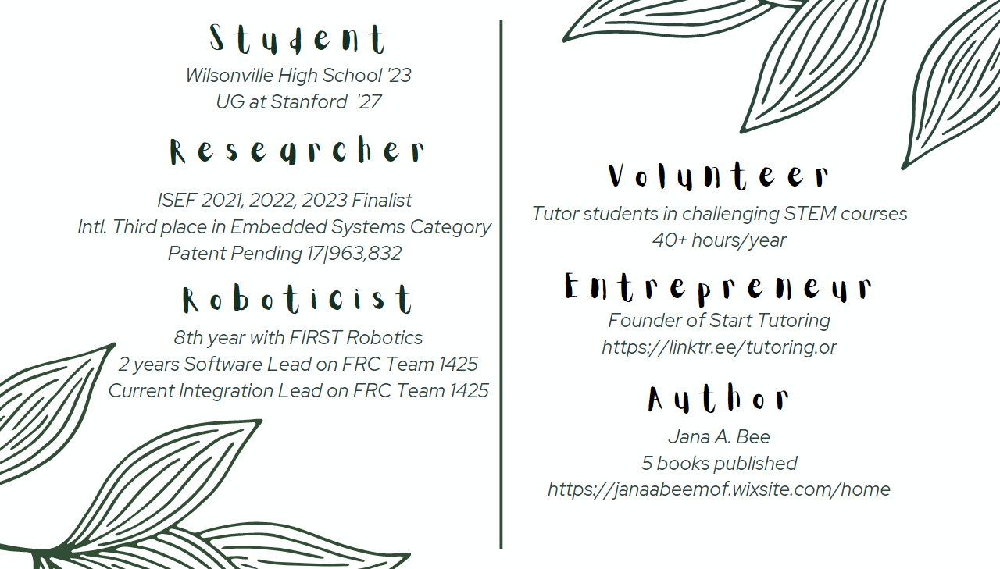

Ms. Aditi Bhaskar
Patent Pending! US Non-Provisional Patent 17|963832
Wilsonville High School Class of 2023
Stanford or Caltech Class of 2027
🌲 🌲 🌲 🌲 🌲 🌲 🌲 🌲
I like science, technology, engineering, and math. In fact, some people (including me) refer to this as STEM so they can save 3 seconds of their life each time they mention it. Time is quite important in this world if I recall correctly. Here are a few of many things I do in my free time:
